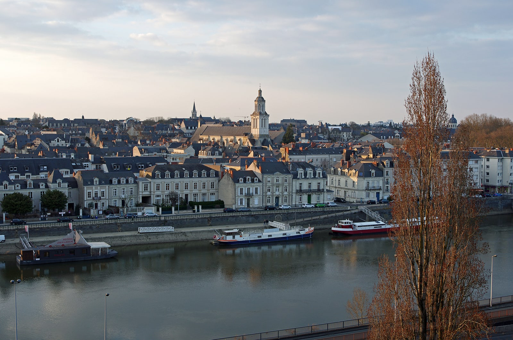

Quel avenir pour notre centre-ville ?
Face à la concurrence d’Internet et des zones commerciales périphériques, faut-il transformer certains espaces commerciaux en logements, bureaux ou services ?
Contribuer sur le centre-villeComment permettre à chacun de se loger à Angers, tout en préservant la qualité de vie et le dynamisme de la ville ?

Réflexion rattachée au pôle07 Logement, aménagement, mobilités et territoires
Regards croisés : Économie et commerces · Étudiants et jeunesse · Finances publiques
Un sujet à discuter, pas une position arrêtée. Ces questions ouvrent une réflexion du mouvement. Elles ne constituent ni un programme électoral ni des propositions officiellement adoptées.
Angers est une ville attractive. Mais peut-on encore facilement s’y loger, y devenir propriétaire ou y développer une activité commerciale ?
Le prix du foncier, le coût des constructions, les contraintes réglementaires et l’évolution de nos modes de vie bouleversent le marché immobilier.
Faut-il davantage réglementer et subventionner, ou redonner de la liberté aux acteurs économiques ? Entre ces deux approches, ne devons-nous pas rechercher un équilibre adapté aux réalités angevines ?
L’objectif : partir des difficultés vécues, confronter les choix possibles et faire émerger ensemble trois ou quatre priorités concrètes pour Angers et son agglomération.
Un vécu, une difficulté ou une piste à partager ? Choisissez le sujet qui vous parle.
Face à la concurrence d’Internet et des zones commerciales périphériques, faut-il transformer certains espaces commerciaux en logements, bureaux ou services ?
Contribuer sur le centre-villeComment encourager les propriétaires à louer leurs biens tout en protégeant les occupants ? Les réglementations actuelles produisent-elles toujours les effets recherchés ?
Contribuer sur la locationComment mieux anticiper leurs besoins en logements sans déséquilibrer la vie des quartiers ni réduire l’offre destinée aux familles ?
Contribuer sur le logement étudiantFaut-il nécessairement construire davantage, ou aussi mieux gérer, répartir et attribuer les logements existants ? Comment garantir transparence, mixité et maîtrise des dépenses publiques ?
Contribuer sur le logement socialComment concilier construction, accession à la propriété, préservation des jardins, circulation et qualité de vie ? Comment mieux maîtriser le coût du foncier et éviter les grands projets immobiliers économiquement irréalisables ?
Contribuer sur la ville de demainDes solutions comme le bail réel solidaire, qui dissocie la propriété du logement de celle du terrain, peuvent-elles répondre aux attentes des Angevins ?
Contribuer sur l’accessionLe bail réel solidaire distingue le foncier du logement. L’organisme de foncier solidaire conserve le terrain ; le ménage éligible acquiert des droits sur le logement et verse une redevance foncière. Résidence principale, conditions de ressources et revente encadrée font partie du dispositif.
Comprendre le dispositif sur BoRiS, service du ministère chargé du logement . Repère documentaire consulté le 22 octobre 2026, sans recommandation individuelle ni prise de position sur son utilisation à Angers.
Habitants, propriétaires, étudiants, commerçants : quelles situations rencontrez-vous concrètement ?
Construire ou rénover, densifier ou préserver, réglementer ou encourager : quels équilibres rechercher ?
Quels coûts, avantages et limites ? Qu’est-ce qui relève de la ville, de l’agglomération ou d’autres décideurs ?
Les contributions nourrissent le travail du pôle. Une idée reçue ou une piste discutée ne devient une position officielle qu’après validation explicite.
Décrivez une situation, une question ou une proposition. Aucun compte ni adhésion n’est nécessaire, et vous pouvez contribuer sans laisser vos coordonnées.
Votre envoi est traité dans l’espace privé existant de l’association. Il n’est pas publié automatiquement : ce dossier n’est ni un forum public ni un sondage.
Un lien vers le sujet complet, pour permettre à chacun de le lire avant de contribuer.
angersaucoeur.org/reflexion-immobilier-habitat-angers.html
Photo : Daniel Jolivet · CC BY 2.0 · Wikimedia Commons. Cadrage adapté, crédits intégrés au visuel.